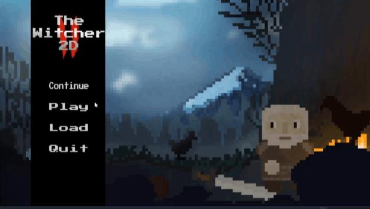
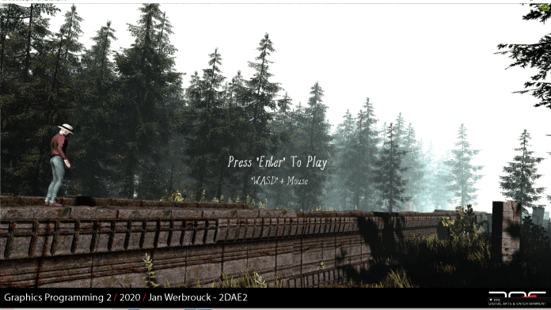
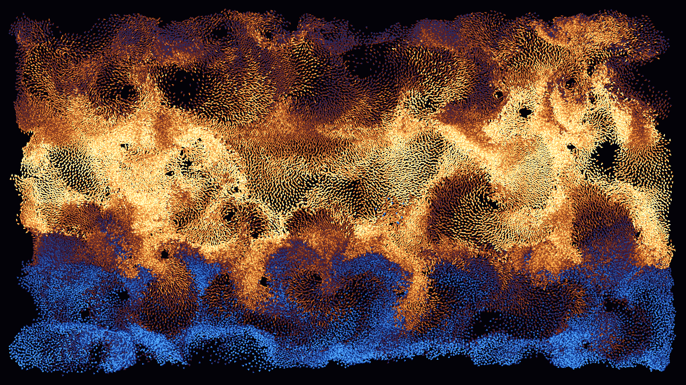
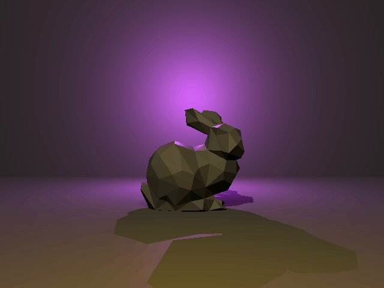
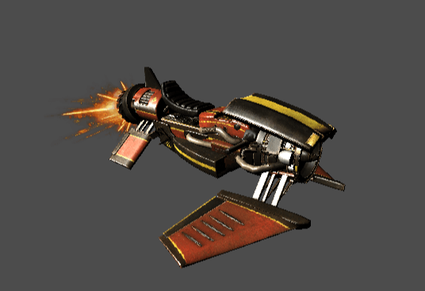

Age Of Empires IV
Age of Empires IV - Xbox
Proprietary Engine | C++ | DirectX12 | XBOX One/Series
Contributed to the optimization team for the Xbox console port of Age of Empires IV. Focused on identifying performance bottlenecks and implementing console-specific optimization techniques to maximize hardware utilization and achieve target frame rates.
Returnal PC Features Trailer
RETURNAL PC - Sony
UE4 | C++ | DirectX12
Collaborated within the Graphics and Optimization team at Climax Studios to deliver the PC port of the PlayStation 5 exclusive, Returnal. Responsible for profile-driven optimization and debugging of rendering pipelines, including shader compilation and loading-time improvements.
Integrated and optimized advanced graphics techniques such as Variable Rate Shading (VRS), AMD FSR, and NVIDIA NIS.
Developed custom material nodes and tools to streamline the environment art workflow, while resolving critical graphics, gameplay, and multiplayer bugs.
Personal Projects

The Witcher 2D
C++ | SDL | OpenGL
A custom 2D clone of The Witcher 3 developed as a first-year project. Implemented core gameplay systems, rendering pipelines, and input handling from scratch using C++, SDL, and OpenGL.

Temple Run
C++ | DirectX11
A 3D endless runner built from the ground up using C++ and DirectX 11. Features custom rendering, collision detection, and player mechanics modeled after the mobile game Temple Run.

Quadric Renderer
C++ | DirectX12
A compute-shader-based software renderer developed in DirectX 12. Utilizes DirectCompute to perform custom mathematical intersection tests for rendering ellipsoids and other mathematical quadrics directly, rather than relying on traditional triangle meshes.

Shadertoy Particle System
GLSL | WebGL | Shadertoy
A generic Particle Framework for Shadertoy, supporting hundreds of thousands of particles in real time, within the Shadertoy constraints — which proved a big challenge.

Software Raytracer
C++ | SDL | Visual Studio
A CPU-based software raytracer featuring ray intersection with planes, spheres, and triangle meshes. Includes a custom OBJ parser and supports directional/point lights, shadows, and physically-based rendering (PBR) materials.

Software Rasterizer
C++ | SDL | Visual Studio
A CPU-based software rasterizer supporting normal mapping, Phong lighting, and directional light sources, with implementation of both point and bilinear texture sampling.
Contacts

Built with
Mobirise